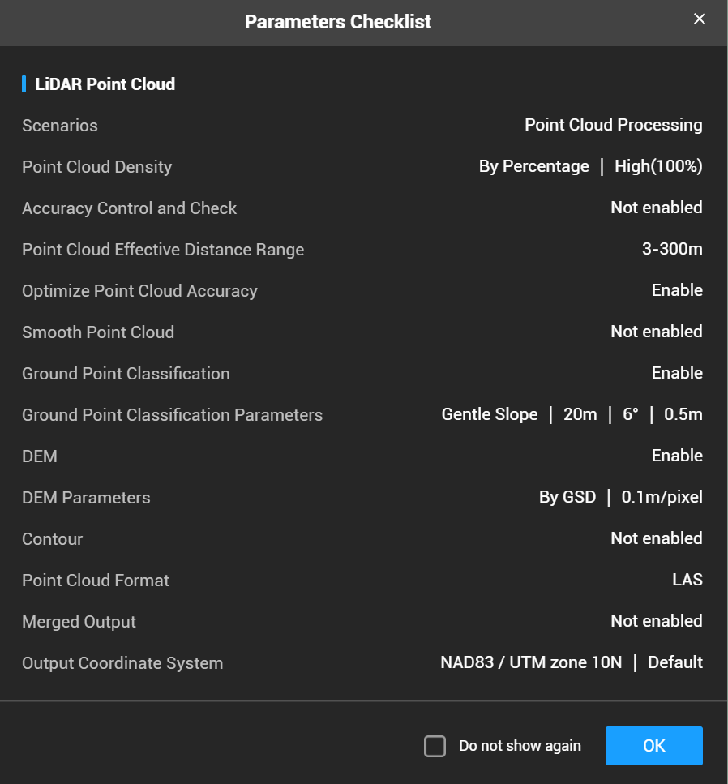
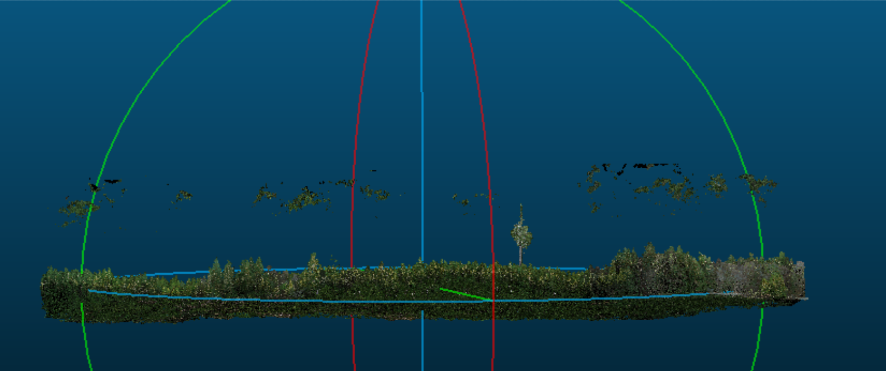
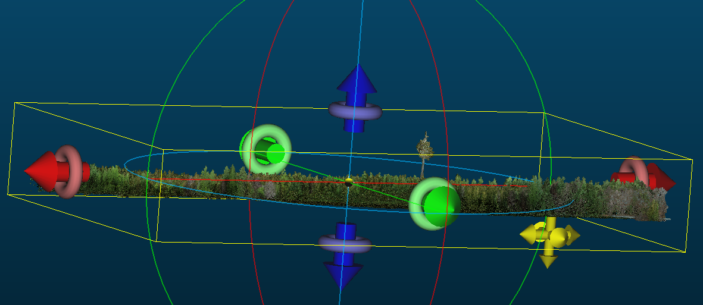
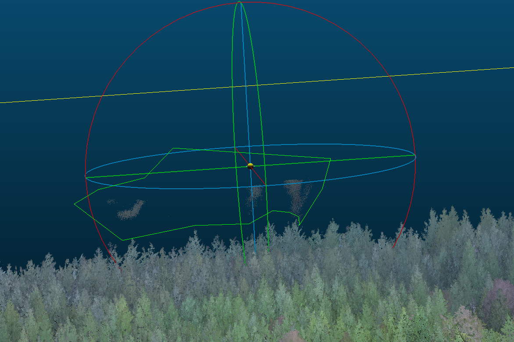

Chapter 9 LiDAR Processing Workflow
9.1 DJI Terra
- Open DJI Terra and start a LiDAR Point Cloud Processing session
- Import the flight files, including imagery if you would like a colorized point cloud
- Below are the settings we use to process the point cloud:
- We use the deafult settings set by DJI with the exception of setting the DEM resolution to 10cm

9.2 Register the LiDAR to the DAP point cloud
Convention is generally to register DAP to LiDAR however for this specific project it made more sense to register the LiDAR to the DAP because:
We were flying biweekly multispectral and RGB imagery and only 2-3 LiDAR acquisitions a year.
We could not load the LiDAR point cloud into Agisoft Metashape to use as a reference for registration however could register all DAP clouds to a reference DAP cloud in Agisoft.
This allowed us to more easily register the many multispectral and RGB acquisitions to a defined template in Agisoft Metashape and use the exported point cloud of the template DAP to register the LiDAR in CloudCompare.
This process worked well for us since our priority was centimeter-level registration of orthomosaics and LiDAR between many dates and across multiple sensors.
9.2.1 Prepare LiDAR for registration
Below are snipets of a script written in LAStools that is used to ensure the LiDAR and DAP clouds are in the proper projection, filters out points in the LiDAR that are above a defined threshold, and clips the LiDAR to a boundary polygon to speed up registration by avoiding working with excess data in CloudCompare.
The unparsed script can be found on the project GitHub, see GitHub link
- Ensures both the DAP point cloud and LiDAR file are in the proper projection (NAD83 UTM 10N in our case)
- path_to_L1_las is the path to the LiDAR .las file from DJI terra.
- path_to_write is where the path the projected .laz file will be written to. The files will be saved out with the same file name as the origianl LiDAR file with a “_nad83” suffix.
- “REM” works to comment out a line in LAStools as “#” does in R.
REM Project DAP and save out as a .laz
las2las -i path_to_DAP_las_file ^
-odir path_to_write ^
-odix _nad83 ^
-olaz ^
-nad83 ^
-utm 10north ^
-cpu64 ^
-v
REM Project LiDAR and save out as a .laz
las2las -i path_to_L1_las ^
-odir path_to_write ^
-odix _nad83 ^
-olaz ^
-nad83 ^
-utm 10north ^
-cpu64 ^
-v
- Drops points in the LiDAR point cloud above a user defined threshold to remove noisy points that are not from the canopy (i.e. due to air moisture, birds, etc.). To determine this height threshold you can plot a histogram of Z values or visualize the point cloud in a software that allows 3D point cloud visualization to ensure that the threshold will not result in any top canopy points being removed. Though we use CloudCompare for point cloud registration, we recommend Potree to visualize point clouds as it handles large point clouds quickly and with ease. Both Potree and CloudCompare are open-source software.
- If you do not have any point above the canopy or below the ground that need removing you can skip this step.
- path_to_projected_L1 is the path to the projected LiDAR .laz file from above
REM dropping points above 160m (160m is the height cutoff for this dataset)
las2las -i path_to_projected_L1 ^
-odir path_to_write ^
-odix _droppedPtsAbove160m ^
-olaz ^
-drop_z_above 160 ^
-cpu64 ^
-v- Lastly we clip the LiDAR file to a boundary polygon of the site to remove excess surrounding data that can slow processing in CloudCompare.
- path_to_shp is the path to the site shapefile.
- path_to_projected_below160m_L1 is the path to .laz file that has been projected and filtered for points above a set threshold in steps 1 and 2 above.
- “-odix _clipped” will save the new laz file with the same name as the input file with “_clipped” attached to the end, change the “_clipped” to work with your naming system.
lasclip -i path_to_projected_below160m_L1 -merged -path_to_shp -odir path_to_write -odix _clipped -olaz9.2.2 Register LiDAR to DAP cloud in CloudCompare
Import both the LiDAR and DAP clouds into CloudCompare (CC). This can take up to twenty minutes. Allow all for the first two warnings.
Figure 9.1: Left: Apply all for this initial CloudCompare popup setting. Right: select ‘Yes to All’ for this second setting
9.2.2.1 Examine the point clouds for artifacts.
The L1 will reflect flight lines when there is moisture in the air. Below is an example point cloud from a damp day on the coast just after a fog past through. For sake of the example, it was not filtered in LAStools with a height threshold.

The residual fog patches seen above the canopy can be clipped out using the cross section or segment tool.
 
9.2.2.2 Rough Alignment
The goal is to roughly align (move) the LiDAR to our reference “template” DAP dense cloud ahead of the ICP fine adjustment algorithm.
Problem: Manually moving the LiDAR cloud to roughly align with the DAP cloud caused Cloud Compare to crash or hang when working with larger data sets.
Solution: Use the Apply Transformation function in CloudCompare – Highlight the LiDAR layer in the DB tree - Hit ctrl T or Apply Transformation in the Edit menu.
In this example the LiDAR is the lower.

First apply a Z transformation. It is best to do this while viewing the edge of the plot. Here we applied a Z transformation of +6.

Next Apply transformations in the x and y axis.
Find a section of the clouds where you can easily see the alignment. In this case there is a single large leave tree in the centre of the plot. The LiDAR is the one on the left.
Here we see the LiDAR is offset to the left (negative) on the Y(green) axis and up (positive) on the x(red) axis.
Figure 9.2: Left: . Right: .
Be careful not to rotate, only transform.
In this case the LiDAR was shifted -5 in the X and +5 in the Y axis in total. The shift was done in three smaller iterations to achieve the alignment seen in the above screen capture.
9.2.2.3 Fine Registration: Iterative Closest Point (ICP)
Highlight both clouds in the DB tree and apply the fine registration (ICP) algorithm using the following settings. Careful to set a max thread count that matches the resources you have available.

Save out the registered LiDAR point clouds at the highest resolution
9.2.3 Rescale and tile the registered LiDAR:
Below are snipets of a script written in LAStools that is used to project, rescale and tile the registered LiDAR point cloud.
The unparsed script can be found on the project GitHub, see GitHub link
- Projecting the registered LiDAR to the proper projection (NAD83 UTM 10N).
- If you are working with already tiled data or multiple .laz/.las files on a multi-core computer than you can use the cores command shown below. Here we defined cores=4 which allows 4 cores to work on the command simultaneously on different files. If you are only working with one .laz/.las file at this point there is no need to specify the number of cores and the “^ -cores %cores%” following the “-v ^” should be removed from the below code
- Change “path_to_registered_lidar” to the path to the registered LiDAR data exported from CloudCompare.
- “*.las” takes the las file in that folder, change to the file name if have more than one .las in the folder and you want to specify a specific file.
- Change “path_to_write\01_proj_NAD83” to the path you would like the new projected .laz file to be written to.
set cores=4
las2las -i path_to_registered_lidar\*.las ^
-odir path_to_write\01_proj_NAD83 ^
-odix _nad83 ^
-olaz ^
-nad83 ^
-utm 10north ^
-cpu64 ^
-v ^
-cores %cores% - Rescales the data which is necessary to later load into R for normalization and metric calculations.
- Registered LiDAR is exported from CloudCompare at the highest resolution which changes the scale of the data, hence rescaling the x,y,z to 0.01 is necessary to avoid warnings/errors in R
- “path_to_write” is in the input dir and the output dir because its the main folder we are now working in
- “path_to_write\01_proj_NAD83*.laz” selects the .laz file in the “path_to_write\01_proj_NAD83” folder, if there are more than one .laz file in your folder and you want to specify which to call, change the “*” to the name of the file.
- The output .laz file will be written to the “path_to_write\02_rescaled” folder with the same name as the original file.
las2las -i path_to_write\01_proj_NAD83\*.laz ^
-rescale 0.01 0.01 0.01 ^
-cpu64 ^
-utm 10north ^
-v ^
-odir path_to_write\02_rescaled ^
-olaz- Next the code indexes the LiDAR data. Indexing creates a “.lax” file for a given .las or .laz file that contains spatial indexing information. When this LAX file is present it will be used to speed up access to the relevant areas of the LAS/LAZ file for spatial queries.
REM Indexing
lasindex -i path_to_write\02_rescaled\*.laz- Lastly tiling divides the point clouds into tiles to allow for parallel processing in the following R steps.
- “tile_size 15” sets the size of the tiles to 15m.
- “buffer 4” sets the size of the buffer surrounding the tiles to 4m.
- “flag_as_withheld” flags the buffer points so that they can be easily filtered out in the following steps in R.
REM Creating 15m tiles
lastile -i path_to_write\02_rescaled\*.laz ^
-tile_size 15 ^
-buffer 4 ^
-flag_as_withheld ^
-odir path_to_write\03_tile ^
-olaz 9.3 Normalization and individual tree point clouds
The below workflow includes explanations and code where applicable for each of the following:
Creating a 10cm DTM from the registered LiDAR tiles
Normalizing the tiles using the DTM
Creating a 4cm CHM from the max Z values in each pixel
Segmenting the tiles to only retain the top 25% of each tree using the crown polygons. The threshold will be site and age dependent. We set our threshold to the top 25% given that the trees were mature with crown closure and we were not confident the lower 75% of the point cloud did not contain any invading neighboring branches.
Merging segmented tiles to create one large point cloud containing the top 25% of each tree
Clipping the point cloud into individual point clouds per tree
Note: The full code that can be found on the project GitHub runs through the above steps in a for loop. For sake of this guide we have rearranged the ordering of some steps (i.e. functions will be defined as we go in this guide, however are defined at the beginning in the full R script to allow the for loop to run).
9.3.1 Creating a DTM from the registered LiDAR tiles
To being, when working with LiDAR data in R, an incredibly useful package is the lidR package. We highly recommend taking a look at the lidR bookdown for useful tips and examples on using the package.
The packages required for our workflow are:
library(tidyverse)
library(sf)
library(sp)
library(spatial)
library(raster) # working with raster data
library(terra)
library(lidR) # reading and processing LiDAR data
library(sp) # defines and allows us to work with spatial objects
library(nngeo)
library(future)
library(rmapshaper)
library(concaveman)
library(parallel)
library(foreach)
library(smoothr)
library(ForestTools)
library(gdalUtilities)
library(exactextractr)
library(alphashape3d) # Creates alpha shapes used to calculate crown volume
library(lwgeom)
library(dplyr)Here we are reading in the output tiles from the tiling and rescaling step above. We then drop the buffer points that were flagged as withheld in the LAStools tiling stage, set the new chunk buffer to 0.5m and set the opt_output_files to empty given that we do not want to save DTMs for the individual tiles but rather one for the entire site.
dir <- "set_path_to_folders"
TILES = readLAScatalog(folder = paste0(dir, "\\03_tile\\"), filter = "drop_withheld")
opt_filter(TILES) <- "-drop_withheld" # set filtering options for the LAScatalog object to drop withheld points
opt_chunk_buffer(TILES) = .5 # set the buffer size for chunks in the LAScatalog object to 0.5m
opt_laz_compression(TILES) = TRUE # enable LAZ compression for the LAScatalog object
opt_output_files(TILES) = "" # set output file options for the LAScatalog object to empty
opt_progress(TILES) = TRUE # enable progress tracking for processingNext we create a 10cm DTM using the tin() algorithm and smooth the raster by using the mean focal statistic and a focal window of 25 by 25 cells over the DTM. As the focal window shifts over the raster, it updates the pixel that sits at its center to the mean value within the 25 x 25 cell window. We then assigned the proper CRS and exported the raster as a tif.
# Create a DTM
DTM = grid_terrain(TILES, res = 0.1, tin(), full_raster = FALSE) %>%
# applying a focal operation to the DTM raster: computing the mean value within a moving window defined by a matrix.
focal(w = matrix(1, 25, 25), # define a 25x25 window with all values as 1
fun = mean, # use the mean function to compute the focal statistic
na.rm = TRUE, # remove NA values from computation
pad = TRUE) # pad the edges of the raster with NAs to maintain the original extent
crs(DTM) <- CRS("+proj=utm +zone=10 +datum=NAD83") # assign a CRS to the raster using the proj4 string representation
writeRaster(DTM, paste0(dir, "\\04_RASTER\\", site, "_DTM_0.1m.tif"), overwrite = TRUE) #save the DTM9.3.2 Normalizing the tiles using the DTM
The R code below reads in the tiled registered LiDAR as a LAScatalog and normalizes the tiles to the DTM made in the previous step. The normalized tiles are then saved out and read back into R to filter out points below “ground” designated to be -0.25m. Here we save out the “cleaned” normalized tiles in a new folder, however for space saving reasons you can also overwrite the original normalized tiles by setting the “opt_output_files()” parameter in the filtering step to the same path as that set for the normalization step.
# Read the tiles again, but with high-res parameters
CTG = readLAScatalog(folder = paste0(dir, "\\03_tile\\"))
opt_chunk_buffer(CTG) = .5 # small buffer; we're just normalizing
opt_laz_compression(CTG) = TRUE
opt_filter(CTG) = "-thin_with_voxel 0.01" # 1cm voxel thinning
opt_output_files(CTG) = paste0(dir, "\\05_NORM\\{*}_NORM") #saving out normalized individual laz files with an extension of _NORM to the 05_NORM folder
opt_progress(CTG) = TRUE
# Normalizing the tiles in the catalog using the DTM, tiles will be saved to the location designated in the above "opt_output_files" as they are processed
NORM = normalize_height(CTG, DTM, na.rm = TRUE)#normalizing the laz files in the CTG to the previously made DTM
# Read in the normalized laz files and filter out points below -0.25 (below ground)
NORM = readLAScatalog(paste0(dir, "\\05_NORM\\"))
opt_chunk_buffer(NORM) = 0 # no buffer, just filtering
opt_laz_compression(NORM) = TRUE
opt_filter(NORM) = "-drop_z_below -.25" #drop points below -25cm
opt_output_files(NORM) = paste0(dir, "\\06_NORM_clean\\{*}") #save the filtered normalized filed to the "06..." folder, here you can also choose to overwrite the original normalized laz files by setting the output location to the "05_norm" folder designated as the output in the normalization step
opt_progress(NORM) = TRUE #show the progress
NORM_clean = catalog_retile(NORM) # applying the filter to all files in the catalog9.3.3 Creating a 4cm CHM from the max Z values
A 4cm CHM was made using max Z values. We chose a resolution of 4cm as it gave us a good looking (no holes, no visible noise) high resolution CHM. We recommend testing out multiple resolutions at this stage to narrow down parameters that work for your data.
# Making a 4cm resolution CHM
CHM_max = grid_metrics(NORM_clean, #NORM_clean is the catalog the CHM is being made from
res = 0.04, #4cm resolution
func = ~max(Z)) #using max Z values
crs(CHM_max) <- CRS("+proj=utm +zone=10 +datum=NAD83") # assign a CRS to the raster using the proj4 string representation
writeRaster(CHM_max, paste0(dir, "\\04_RASTER\\", site, "_CHM_max_0.04m.tif"), overwrite = TRUE) #saving out the CHM9.3.4 Segmenting tiles
The normalized tiles were then segmented to only retain the top 25% of each tree. This was done using a shapefile (.shp) containing a polygon for each tree crown, see the chapter on crown delineation for a detailed workflow showing how to create crown polygons.
The threshold set for segmentation will be site specific. We chose to only retain the top 25% of the point cloud for each tree in our mature (~25 years old) sites with crown closure in order to: 1. limit the chance of capturing invading branches in our LiDAR data 2. Capture a similar scope of the trees in both the LiDAR and photogrametic data, given that the aerial imagery is limited to branches that can be seen from an aerial perspective.
A range of thresholds, from 50% (for ~10 year old trees that were around ~8m in height) to 80% (for ~4 year old trees that were around ~1m in height), were used for the younger sites we worked with depending on the proportion of the tree crown that is visible from an aerial, oblique perspective.
To begin, we must first define the function that will segment the trees. Here “zq” is the threshold for the height segmentation and can either be set in the polys_to_las function (if you would like it to be the same value each time the function is run) or defined as a variable prior to initiating the function (use this option if the function will be called for different sites that have different zq values).
The polys_to_las function works by: 1. Identifying points that fall within a tree crown and labeling the points with the unique treeID for that crown 2. Labels points within the crown that fall below the defined height threshold to have a treeID of zero 3. Filters to only keep points with a treeID value greater than zero
Important: - If zq = 0.75, then the points in the bottom 75% of the tree will be removed, leaving a point cloud for the top 25% only. - “treeID” is a column in our dataset that functions as a unique identifier per tree within the site, ensure you change each instance of treeID to a column containing a unique identifying for your trees. The unique identifiers can come from the experimental site setup or the crown delineation step.
# Function that will segment the LiDAR tiles to only retain points above a defined cutoff
polys_to_las = function(chunk, zq = zq, polygons = pols) { #edit zq = zq here if you would like the function to always use the same zq value, ie zq = 0.75, otherwise leave zq = zq as you will be able to define zq in the next code chunk
las = readLAS(chunk)
if (lidR::is.empty(las)) {
return(NULL) }# If the LAS file is empty, return NULL
las2 = merge_spatial(las, polygons, "treeID") # Merge the LAS points with the polygons based on the treeID attribute, change the "treeID" attribute to a unique identifier for the trees you are working with
las_df = las2@data %>%
dplyr::group_by(treeID) %>%
dplyr::mutate(Zq999 = quantile(Z, 0.999)) %>% # compute Zq999 (the 99.9th percentile of Z) for each tree
dplyr::mutate(treeID = if_else(Z > quantile(Z, 0.999) * zq, as.numeric(treeID), 0))# assign points below the top zq% of the tree height a treeID of zero to filter them out later
las3 = las2 %>%
add_lasattribute(las_df$treeID, name = "treeID", desc = "treeID") %>% #add treeID las a lasattribute
filter_poi(treeID > 0) #filter for points with a treeID greater than 0
if (lidR::is.empty(las3)) {
return(NULL)#return NULL is the las3 is empty
} else {
return(las3)#return the las file that has a treeID associated with it and only contains points in the top zq%
}
}Next we read in the normalized files, set our zq threshold and run the tiles through the polys_to_las segmentation function using the catalog_apply function.
# Read in the normalized cloud from the end of the last step
NORM = readLAScatalog(paste0(dir, "\\06_NORM_clean\\"))
crs(NORM) <- st_crs(26910) # setting CRS
opt_chunk_buffer(NORM) = 0 # no buffer
opt_laz_compression(NORM) = TRUE # compress output files to .laz objects
opt_output_files(NORM) = paste0(dir, "\\07_SEGMENTED\\{*}_SEGMENTED") # write output files to "07_SEG..." folder and name with suffix "_SEGMENTED"
opt_progress(NORM) = TRUE # show progress
zq = 0.75 # Height percentile to drop, here we will be filtering for the top 25% of the tree
# New tiles have only segmented portions of tree crowns
SEGMENTED = catalog_apply(NORM, polys_to_las) # apply the poly_to_las function to the NORM catalog9.3.5 Merging segmented tiles to create one large point cloud containing the top defined height % of each tree
This is done to facilitate clipping out individual tree point clouds in the next step.
Note:
The opt_chunk_size(SEGMENTED) = 10000 sets the new chunk size to 10,000 units of the CRS, in this case the chunk size is 10km x 10km. This is done to read in all the segmented tiles at one time so they can then be merged together into one tile. This value will be site specific however a very large value of 10km x 10km should work for the vast majority of sites.
The catalog_retile function merges the point clouds into one large point cloud
SEGMENTED = readLAScatalog(paste0(dir, "\\07_SEGMENTED\\"))
opt_chunk_buffer(SEGMENTED) = 0 #zero buffer
opt_chunk_size(SEGMENTED) = 10000 #set the chunk size for the LAScatalog object to 10000 units of the CRS so that all laz files are merged into one large laz file
opt_laz_compression(SEGMENTED) = TRUE
opt_progress(SEGMENTED) = TRUE
opt_output_files(SEGMENTED) = paste0(dir, "\\08_MERGED\\", site, "_HULLS_merged") #write output files to "08_M..." with the suffix "_HULLS_merged"
# merge all the segmented trees into a single point cloud
MERGED = catalog_retile(SEGMENTED) #apply the above opt_ commands
print("merged") #print statement to show where the code is at9.3.6 Clipping the point cloud into individual point clouds per tree
This step results in individual tree point clouds that represent the top #% of the tree, where # is the height percentile defined in the segmentation step above.
opt_output_files(MERGED) = paste0(dir, "\\09_CROWNS\\", site, "_fam{fam}_rep{rep}_tag{tag}_treeID{treeID}") #where the individual crown point clouds will be written to and the suffix they will have. Note values associated with the laz file will replace the names in {}
CROWNS = clip_roi(MERGED, pols) #clip the MERGED laz file to individual crowns using the crown polygons Below we define the clean_crowns function that ensures that only points: - with the correct treeID remain in each individual tree point cloud. - that pass the defined height percentile threshold remain in the point cloud
This function was added to double check that only the points that meet the criteria remain in the point clouds
clean_crowns = function(chunk) {
las = readLAS(chunk) #reading in las file
if(lidR::is.empty(las)) return(NULL) #removing empty
#ensuring all points in the cloud have the same/right tree ID
treeID_true = as.numeric(names(sort(table(las@data$treeID), decreasing = TRUE))[1])
las2 = filter_poi(las, treeID == treeID_true)
#(added to Sam's code) filter points below the 75% threshold that were not dropped previously
las_df = las2@data %>%
dplyr::group_by(treeID) %>%
dplyr::mutate(Zq99 = quantile(Z, 0.99)) %>%
dplyr::mutate(Zq999 = quantile(Z, 0.999)) %>%
dplyr::ungroup()
las3 = filter_poi(las2, Z >= quantile(Z, 0.99)*zq) #only keeping points above 99%*zq height percentile
las4 = filter_poi(las3, Z <= quantile(Z, 0.999)) #removing points too high
}## CLEANING crowns
CROWNS = readLAScatalog(paste0(dir, "\\09_CROWNS\\"), filter = "-drop_withheld") #read in the clipped crown point clouds
opt_chunk_size(CROWNS) = 0 # processing by files
opt_laz_compression(CROWNS) = TRUE
opt_chunk_buffer(CROWNS) = 0 # no buffer
opt_wall_to_wall(CROWNS) = TRUE # disable internal checks to ensure a valid output
opt_output_files(CROWNS) = paste0(dir, "\\10_CROWNS_clean\\{*}") #location for output files
print("cleaning crowns")
CROWNS_clean = catalog_apply(CROWNS, clean_crowns) #applying the clean_crowns function on the CROWNS9.4 Individual Tree Metrics
This script calculates the following metrics for each tree:
- Height percentiles: 99, 97.5, 95, 92.5, mean height
- To create new height percentiles, change the “X” here:
- as.numeric(quantile(Z, X, na.rm = TRUE))
- To create new height percentiles, change the “X” here:
- Volumes: convex and two variations of concave (α = 1, α = 0.5)
- Volume calculations are dependent on the alpha shape created. The larger the alpha parameter used to create the alpha shape the more convex the hull shape, whereas the smaller the alpha the more concave the shape.
- Very small alpha values can result in capturing holes in the point cloud as it will hug tightly to the points
- The alpha shape for convex (lines curving outward) hull volume requires an α = inf and represents the tightest convex boundary around all points in the point cloud
- Concave volume often uses α = 1, however below we also calculate concave volume with α = 0.5 for a more defined shape
- To create a new alpha shape with a new alpha value change the “α_value” below: alphashape3d::ashape3d(x = a3d, alpha = “α_value, pert = TRUE,eps = 1e-09)
- Crown complexity: rumple, canopy rugosity ratio (CRR), coefficient of variation of height
- Rumple measures the ratio of canopy surface area to ground surface area to give an idea of complexity.
- Canopy Rugosity Ratio (CRR) quantifies the vertical complexity of the canopy or crown.
- Coefficient of variation of height quantifies the variability of points in the point cloud. This metric is often used to look at structural diversity of a stand, however we added it to look at variation in point distribution within individual trees, to give an idea of variation in vegetation density between crowns.
Z = las@data$Z # Z values of each point in the .laz cloud
chm = grid_metrics(las, func = ~max(Z,na.rm = TRUE), res = 0.05) # 5cm CHM with max Z values #grid_metrics, replaced by pixel_metrics :https://github.com/r-lidar/lidR/releases
# Extract X, Y, and Z coordinates from the LAS data and create a matrix 'a3d'
a3d <- cbind(las@data$X, las@data$Y, las@data$Z)
# Center the points around the origin (0,0,0) by subtracting the mean of each dimension
a3d[,1] = a3d[,1] - mean(a3d[,1],na.rm = TRUE) #center x values
a3d[,2] = a3d[,2] - mean(a3d[,2],na.rm = TRUE) #center y values
a3d[,3] = a3d[,3] - mean(a3d[,3],na.rm = TRUE) #center z values # sams orginal code did not center the Z values, but that is the only way we found to not get an error thrown in the ashape3d function.
# Generate different shapes using the alphashape3d package
shape_convex = alphashape3d::ashape3d(x = a3d, alpha = Inf, pert = TRUE,eps = 1e-09)# Compute a convex hull using alpha = Inf (convex hull) #USED PERT= TRUE : https://cran.r-project.org/web/packages/alphashape3d/alphashape3d.pdf
shape_concave = alphashape3d::ashape3d(x = a3d, alpha = 1, pert = TRUE,eps = 1e-09)# Compute a concave hull using alpha = 1 (concave hull)
shape_a05 = alphashape3d::ashape3d(x = a3d, alpha = 0.5, pert = TRUE,eps = 1e-09)# Compute a shape for alpha = 0.5 (balanced between convex and concave)
structural_metrics_df <- data.frame(
treeID = unique(las@data$treeID),
tag = tag_value,
n_points = length(las@data$Z),
# Crown height
Zq99 = as.numeric(quantile(Z, 0.990,na.rm = TRUE)),# 99th percentile
Zq975 = as.numeric(quantile(Z, 0.975,na.rm = TRUE)), # 97.5th percentile
Zq95 = as.numeric(quantile(Z, 0.95,na.rm = TRUE)),# 95th percentile
Zq925 = as.numeric(quantile(Z, 0.925,na.rm = TRUE)), # 92.5th percentile
Z_mean = mean(Z,na.rm = TRUE), #mean crown height
# Crown volume
vol_convex = alphashape3d::volume_ashape3d(shape_convex), # convex volume
vol_concave = alphashape3d::volume_ashape3d(shape_concave), # concave volume
vol_a05= alphashape3d::volume_ashape3d(shape_a05), #volume with alpha = 0.5 (balance between concave and convex)
# Crown complexity
CV_Z = sd(Z,na.rm = TRUE) / mean(Z,na.rm = TRUE),# Compute the coefficient of variation (CV) of Z values, representing the variability of heights relative to the mean height
rumple = lidR::rumple_index(chm), #rumple: ratio of canopy outer surface area to ground surface area as measured by the CHM and DTM
CRR = (mean(Z,na.rm = TRUE) - min(Z,na.rm = TRUE)) / (max(Z,na.rm = TRUE) - min(Z,na.rm = TRUE))# Compute the Canopy Rugosity Ratio (CRR),
# representing the ruggedness or roughness of the canopy surface
)
#Create structural metrics folder
if (!dir.exists(paste0(dir,"\\10_CROWNS_clean\\Structural_metrics\\"))) {
dir.create(paste0(dir,"\\10_CROWNS_clean\\Structural_metrics\\"), recursive = TRUE)
}
#writing out .rds files
saveRDS(structural_metrics_df, paste0(dir,"\\10_CROWNS_clean\\Structural_metrics\\",name,"_", date,"_structuralMetrics_tag",tag_value,".rds")) #USED PERT= TRUE : https://cran.r-project.org/web/packages/alphashape3d/alphashape3d.pdfBelow are a individual tree point cloud (left), clipped to the top 25% of the tree and its corresponding alphashape used for volume (right).
Figure 9.3: Left: . Right: .
.